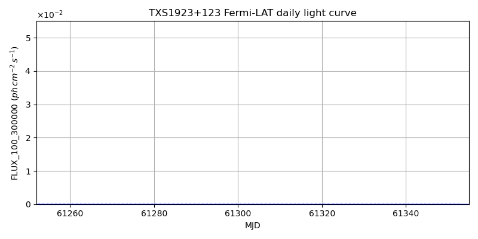
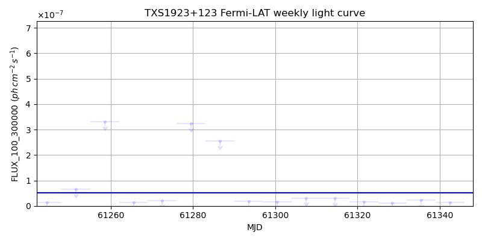
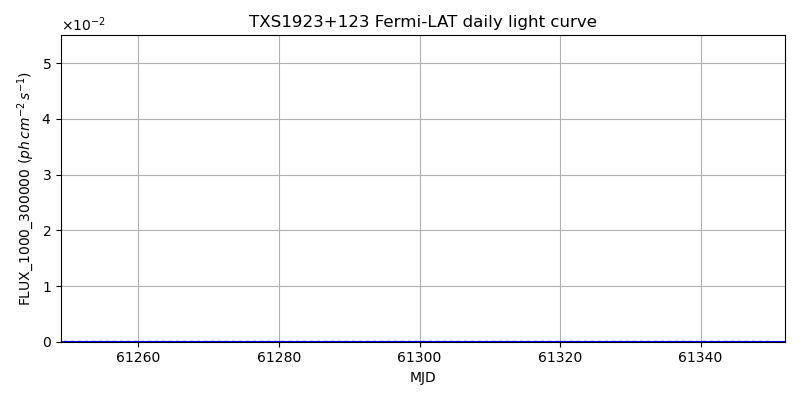
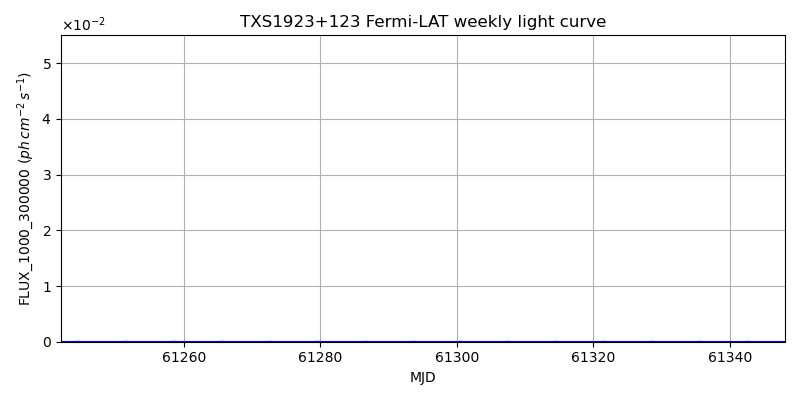

LAT Lightcurve site: https://fermi.gsfc.nasa.gov/ssc/data/access/lat/msl_lc/source/TXS_1923p123
NED: Query
Time of last update of this page: UT: 2026-11-13 16:26 (MJD: 61357.685)
| Property | Value |
|---|---|
| R.A. | 19:25:40.80 |
| Dec. | 12:27:39.6 |
| z | 0.000 |
| 3FGL SpectrumType | PowerLaw |
| 3FGL PL Index | 2.61 |
| 3FGL Flux_100_300000 | 5.09e-08 1 / (s cm2) |
| 3FGL Flux_1000_300000 | 1.26e-09 1 / (s cm2) |
| 3FGL Flux >200 GeV | 2.54e-13 1 / (s cm2) |
| 3FGL Extrap. Crab >200 GeV | 0.00 |
| 3FGL Flux After EBL Absorption >200GeV | 2.54e-13 1 / (s cm2) |
| 3FGL EBL Crab Fraction >200GeV | 0.00 |

| MJD | dMJD | Flux | dFlux | Frac3FGL | FracCrab>200GeV | EBLFracCrab>200GeV |
|---|---|---|---|---|---|---|
| 61348.50 | 0.50 | 9.20e-07 | 0.00e+00 | 0.00 | 0.00 | 0.00 |
| 61349.50 | 0.50 | 9.65e-07 | 0.00e+00 | 0.00 | 0.00 | 0.00 |
| 61350.50 | 0.50 | 7.51e-07 | 0.00e+00 | 0.00 | 0.00 | 0.00 |
| 61351.50 | 0.50 | 1.46e-06 | 0.00e+00 | 0.00 | 0.00 | 0.00 |
| 61352.50 | 0.50 | 8.19e-07 | 0.00e+00 | 0.00 | 0.00 | 0.00 |

| MJD | dMJD | Flux | dFlux | Frac3FGL | FracCrab>200GeV | EBLFracCrab>200GeV |
|---|---|---|---|---|---|---|
| 61321.50 | 3.50 | 1.70e-08 | 0.00e+00 | 0.00 | 0.00 | 0.00 |
| 61328.50 | 3.50 | 1.22e-08 | 0.00e+00 | 0.00 | 0.00 | 0.00 |
| 61335.50 | 3.50 | 2.34e-08 | 0.00e+00 | 0.00 | 0.00 | 0.00 |
| 61342.50 | 3.50 | 1.28e-08 | 0.00e+00 | 0.00 | 0.00 | 0.00 |
| 61349.50 | 3.50 | 1.96e-08 | 0.00e+00 | 0.00 | 0.00 | 0.00 |

| MJD | dMJD | Flux | dFlux | Frac3FGL | FracCrab>200GeV | EBLFracCrab>200GeV |
|---|---|---|---|---|---|---|
| 61348.50 | 0.50 | 2.59e-08 | 0.00e+00 | 0.00 | 0.00 | 0.00 |
| 61349.50 | 0.50 | 3.27e-08 | 0.00e+00 | 0.00 | 0.00 | 0.00 |
| 61350.50 | 0.50 | 3.01e-08 | 0.00e+00 | 0.00 | 0.00 | 0.00 |
| 61351.50 | 0.50 | 2.81e-08 | 0.00e+00 | 0.00 | 0.00 | 0.00 |
| 61352.50 | 0.50 | 1.21e-07 | 0.00e+00 | 0.00 | 0.00 | 0.00 |

| MJD | dMJD | Flux | dFlux | Frac3FGL | FracCrab>200GeV | EBLFracCrab>200GeV |
|---|---|---|---|---|---|---|
| 61321.50 | 3.50 | 5.21e-09 | 0.00e+00 | 0.00 | 0.00 | 0.00 |
| 61328.50 | 3.50 | 4.23e-09 | 0.00e+00 | 0.00 | 0.00 | 0.00 |
| 61335.50 | 3.50 | 7.34e-09 | 0.00e+00 | 0.00 | 0.00 | 0.00 |
| 61342.50 | 3.50 | 3.52e-09 | 0.00e+00 | 0.00 | 0.00 | 0.00 |
| 61349.50 | 3.50 | 3.61e-09 | 0.00e+00 | 0.00 | 0.00 | 0.00 |
--------------------------------------------------------- Using user-supplied coords: 19:25:40.80 12:27:39.6 2000 --------------------------------------------------------- FLWO UT night of: 2026-11-14 Local Sid. @ Midnight: 03:09 Sunset (-15.0) (local, UT): 18:35 01:35 Sunrise (-15.0) (local, UT): 05:42 12:42 Moonrise (local, UT): Moonset (local, UT): 20:50 03:50 Moon phase: 0.22 --------------------------------------------------------- AzTime LSID UT Obj_el Obj_az Mn_el Mn_az Sep. --------------------------------------------------------- 18:35 21:44 01:35 53.2 246.5 20.1 218.2 39.6 19:05 22:14 02:05 47.2 253.1 16.0 223.7 39.5 19:35 22:44 02:35 41.0 258.6 11.6 228.6 39.4 20:05 23:14 03:05 34.7 263.3 6.9 233.2 39.3 20:35 23:44 03:35 28.3 267.6 2.0 237.3 39.2 21:05 00:14 04:05 21.9 271.5 -2.2 241.2 39.1 21:35 00:44 04:35 15.5 275.4 -9.0 244.8 39.0 22:05 01:14 05:05 9.2 279.1 -14.6 248.2 38.8 22:35 01:44 05:35 3.1 283.0 -20.4 251.4 38.7 23:05 02:14 06:05 -2.0 286.9 -26.2 254.5 38.6 23:35 02:44 06:35 -9.4 291.1 -32.1 257.5 38.5 00:05 03:14 07:05 -15.3 295.6 -38.1 260.6 38.4 00:35 03:45 07:35 -20.9 300.6 -44.2 263.8 38.3 01:05 04:15 08:05 -26.3 306.1 -50.2 267.1 38.1 01:35 04:45 08:35 -31.2 312.2 -56.3 270.9 38.0 02:05 05:15 09:05 -35.7 319.2 -62.4 275.3 38.0 02:35 05:45 09:35 -39.5 327.1 -68.4 281.1 37.9 03:05 06:15 10:05 -42.6 336.0 -74.2 289.9 37.8 03:35 06:45 10:35 -44.7 345.7 -79.6 306.2 37.7 04:05 07:15 11:05 -45.7 356.0 -83.2 343.5 37.7 04:35 07:45 11:35 -45.6 6.5 -82.1 35.1 37.6 05:05 08:15 12:05 -44.3 16.8 -77.4 61.2 37.6 05:35 08:45 12:35 -41.9 26.3 -71.8 73.4 37.5 05:42 08:52 12:42 -41.3 28.2 -70.5 75.2 37.5 --------------------------------------------------------- Dark hours >55 deg.: 0.00